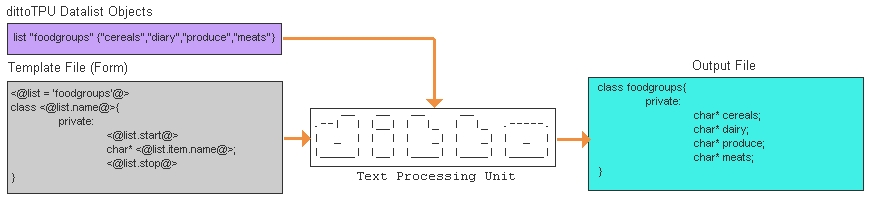

d i t t o Text Processing Unit is a standalone application that generates text output based on datalists and template forms containing a Markup Language.

The dittoTPU Markup Language (dittoML) is a hybrid markup language providing text formatting and programming capability using markup tags. DittoTPU provides a `Datalist` storage mechanism for storing information (Database Tables, etc) in which dittoTPU generates pages that display the data using templates.
module
list
forms
DittoTPU Script/ML
module stores project info
output to separate pages or single page.
<@ - Open ML Tag
@> - Close ML Tag
dittoML is encapsulated between a open followed by a close ML Tag.
Example:
<@ print("dittoML is fun"@>
If an Syntax Error is generated if two consecutive open ML or close ML Tags are encountered.
Example:
<@if a = 1 then <@ /*SYNTAX ERROR*/
All text before a Open ML Tag, after a Close ML Tag, or encapsulated between a Close Tag followed by Open Tag is considered for ouput.
Example:
text <@
@> text
@> text <@
Some dittoML perform special manipulation on Encapslated text.
Example:
<@
comment @>ignore this text for output<@ end
@>
dittoML
Directives
<@import 'moduledirectoryname'@>
<@export 'moduleexportpath\filename.extension'@>
<@include 'filename'@>
<@exclude 'formname from module directory'@>
<@format formattype@>
<@use 'listsfilename'@> loads lists; automatically generates lists objects?
<@output expression@>
<@input variable = @>text here<@endinput@> loads text into a dittoML variable simultaneously outputing text
Flow Control
<@end@>
<@labelname@> loop label
<@goto labelname@> goto to label
<@jump labelname@>
<@break@>
<@continue@>
<@exit@>
<@return constant|var@>
<@if expression@> if condition
<@else expression@> else if condition
<@else@> else condition
<@select@>
Example:
<@select a
if 'hello':
@> hi <@
end
if 'bye':
@> cya <@
end
end
@>
<@script:language@>
dittoML
List Object Tags
List Objects are defined in a *.list files in one or more of the list import formats. The `use` directive loads lists into memory.
<@list = 'listname'@> create a new list
<@list.item.add('itemname')@>
<@list = 'listname'@> loop itemlist; omit name = sub item list
<@list.loop@> start loop
<@list.next@> next item in loop
<@list.name@> output list name
<@list.count@> output item count
<@list.item.name@> output item name within loop
<@list.item.index@> output next item number within loop
<@list.item.name[index]@> output item name by index number
<@list.item.index['name']@> output item index by name
Special List Object Tags
<@list = directory@> a special list of directories within the module. Provides the same members as a list object.
<@list = form@> a list of forms within the module. Provides the same members as a list object.
Formatting Tags
Formatting tags also use '/' terminator.
<@upper@> Uppercase
<@lower@> Lowercase
<@caps@> Capitalize
<@norm@> Normalize text
<@comment@> ignore output for encapsulated text
<@cr@> carriage return
Terminators Tags
<@end@>
<@remove.first@> remove encapsulated text on first item
<@remove.last@> remove encapsulated text on last item
<@format CSV@>
"fieldnames","fieldname","fielname"
"data","data","data",
<@format XML@>
<table name="customer" parent="geography"><field name="First_Name"/><attribute parent="field"></table>
<method name="funct"><input name=""/>
<@format CPPP@> (C++psuedo)
#define label constant|macro
listname {
/*field*/
datatype fieldname;
/*variable, a field with a value assignement.*/
datatype fieldname = somevalue;
/*sublist, child sublist that automatically references the parent*/
sublistname {
datatype fieldname;
}
/*method, a sublist with a format similar to a c++ method prototype*/
output_datatype_fieldname methodname(input_datatype_fieldname,input_datatype_fieldname);
}
<@format SQL@>
CREATE TABLE customer
(First_Name char(50),
Last_Name char(50),
Address char(50),
City char(50),
Country char(25),
Birth_Date date)
<@format SQLP@> SQL-psuedo
CREATE TABLE name
(fieldname datatype)
Loading
Open *.module file
Datalist Import
Directory Scan - Scan and load forms file paths, FORMS directory mimics output directory and files; directory output info also stored
Building
Form → Compiler → Compiled Form (cached) → Virtual Machine → Output
by f.l.taylor 2009 ©